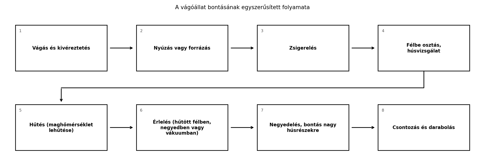

Amikor a séf reggel átnézi a beérkezett húsokat, nem elég annyit tudnia, hogy „marhahús” vagy „sertéshús” érkezett. Azt kell eldöntenie, hogy a szállított húsrész a mai menühöz illik-e: a bélszínből gyorsan süthető steak készül, a marhalábszárból viszont csak hosszú párolással lesz puha, omlós étel. Ha rossz húsrészt választ, a vendég rágós, száraz vagy zsíros fogást kap, és az étel a tányéron már nem javítható. Ezért a szakácsnak pontosan ismernie kell a vágóállatok húsrészeit, azok tulajdonságait és a hozzájuk illő elkészítési módokat.
Képzeld el a marha hátgerincét. A gerinc mentén, a bordák fölött olyan izmok futnak, amelyeket az állat élete során alig terhel. Ezek az izmok finom rostúak, kevés kötőszövetet tartalmaznak, ezért gyors sütéssel is puhák maradnak. A lábszárban és a nyakban viszont olyan izmok vannak, amelyek folyamatosan dolgoztak, ezért sok bennük a kollagénben gazdag kötőszövet. Ezekből a húsrészekből csak nedves, hosszú hőkezeléssel lesz élvezhető étel. Ugyanez a logika érvényes a sertésre, a borjúra és a bárányra is.
Definíció. Vágóállat: olyan, emberi fogyasztásra tenyésztett állat, amelyet hatósági állatorvosi vizsgálat után vágnak le, és amelynek húsa élelmiszerként forgalomba hozható. A magyar konyhai gyakorlatban leggyakrabban a szarvasmarha, a borjú, a sertés, a juh (bárány, ürü) és a kecske tartozik ide.
Definíció. Húsrész: a vágóállat testének az a része, amelyet a bontás során a csontozat és az izomzat természetes határai mentén különítenek el. A húsrész tartalmazhat csontot, zsírt és kötőszövetet is.
Definíció. Bontás: a vágóállat testének félbe, negyedbe, majd nagyobb húsrészekre való szétválasztása. A bontást a vágóhídon vagy a húsüzemben végzik, a konyhára általában már bontott húsrészek érkeznek.
Definíció. Csontozás: a húsrészről a csontok eltávolítása. A konyhán a csontozást csak akkor végezzük, ha a receptúra csont nélküli húst ír elő, vagy ha a csontot külön akarjuk felhasználni alapléhez.
Jogszabály. Magyarországon a vágóállatok levágását, a húsvizsgálatot és a hús forgalomba hozatalát állategészségügyi és élelmiszer-higiéniai előírások szabályozzák. Az állati eredetű élelmiszerekre vonatkozó uniós rendelet (853/2004/EK) és a hazai előírások szerint a friss húst csak hatósági állatorvosi jelöléssel lehet forgalomba hozni. A konkrét jelölési és szállítási követelményeket a hatályos jogszabályban és a NÉBIH-útmutatókban kell ellenőrizni (ellenőrizendő: aktuális előírások).
Higiénia. A friss húst hűtve kell tárolni. A hűtött hús tárolási hőmérséklete a gyakorlatban 0–5 °C, a fagyasztott húsé –18 °C alatt van. A pontos érték az üzem HACCP-tervétől és a hatályos előírástól függ (ellenőrizendő: NÉBIH-útmutató / HACCP-terv). A húsrészeket a nyers húsok tárolására kijelölt hűtőben, zárható edényben vagy letakarva tároljuk, hogy ne érintkezzenek kész ételekkel.
A marha húsrészeit a testtájak szerint csoportosítjuk. A húsrész neve a magyar szaknyelvben gyakran utal arra a testtájra, ahonnan származik. A konyhai felhasználást elsősorban az izom kötőszövet-tartalma és a húsrész zsírtartalma határozza meg.
A marha legértékesebb húsrészei a hátgerinc mentén találhatók:
Tatár beefsteak. A tatár nyers húsból készül, ezért csak megbízható forrásból származó, friss, hűtött bélszínből, közvetlenül a tálalás előtt, tiszta, elkülönített eszközökkel készíthető; tojássárgájaként csak pasztőrözött tojástermék használható (nyers héjas tojás nem); a kész tatárt azonnal tálaljuk, és a vendéget tájékoztatjuk a nyers hús és tojás kockázatáról. Kisgyermeknek, időseknek, várandósoknak és csökkent védekezőképességűeknek nem adható. A pontos feltételeket a HACCP-terv rögzíti (ellenőrizendő: NÉBIH-útmutató a nyers húsból készült ételekről).
A marha mozgásban jobban igénybe vett húsrészei több kötőszövetet tartalmaznak:
A borjú húsa világosabb, finomabb rostú, kevesebb kötőszövetet tartalmaz, mint a felnőtt marháé. A borjú húsrészei hasonló elnevezésűek, de a hús puhább. A borjúból készülő klasszikus ételek közé tartozik a bécsi szelet (borjúcombból, jellemzően felsálból), a borjúpaprikás (lapockából vagy combból), a borjúérmék (szűzpecsenyéből vagy combból), és a borjúlábszár egészben párolva (pl. osso buco).
Megjegyzés. A marhahús érleléséről az előző alfejezet szólt: a húsrész kiválasztása előtt ismerni kell az érleltség fokát, mert a frissen vágott, nem érlelt marhahús rágósabb lehet.
A sertés húsrészeinek felhasználása részben hasonló logikát követ, részben eltér, mert a sertés több zsírt tartalmaz, és a húsa általában kevesebb kötőszövetet tartalmaz, mint a marháé.
Definíció. Frissensütés: gyors, kevés zsiradékban vagy száraz hőben végzett hőkezelés vékony szeletek vagy kisebb darabok esetén. Csak olyan húsrészhez használható, amely kevés kötőszövetet tartalmaz, különben a hús rágós marad.
A bárány a fiatal juh, az ürü a kifejlett, ivartalanított kos vagy a kifejlett juh. A bárány húsa világosabb, enyhébb ízű, finomabb rostú; az ürü húsa sötétebb, jellegzetesebb, erősebb illatú, ezért fűszerezése és előkészítése eltér.
A bárány fontosabb húsrészei:
Az ürü húsrészeinek felhasználása hasonló, de az erősebb íz miatt gyakran pácolják, fokhagymával, rozmaringgal, majoránnával fűszerezik.
A belsőségek a vágóállat ehető belső szervei és mirigyei. A magyar konyha több belsőséget hagyományosan használ, a francia és a nemzetközi konyha szintén.
Definíció. Belsőség: a vágóállat emberi fogyasztásra alkalmas belső szerve, mirigye vagy egyéb testrésze (pl. máj, vese, szív, nyelv, pacal, velő). A belsőségeket csak hatósági állatorvosi vizsgálat után szabad felhasználni.
Fontosabb belsőségek és felhasználásuk:
Higiénia. A belsőségek romlékonyabbak, mint az izomhúsok, mert nagyobb a felületük, több bennük a víz és a tápanyag. A belsőségeket hűtve, elkülönítve tároljuk, és a felhasználásig minél rövidebb ideig tartsuk. A pacal, a vese és a nyelv előkészítésekor a nyers belsőséggel érintkező eszközöket, deszkákat azonnal tisztítsuk és fertőtlenítsük, hogy elkerüljük a keresztszennyeződést.
Munkabiztonság. A csontozás és a belsőségek tisztítása késsel, csontfűrésszel vagy tisztítókéssel történik. A kést mindig magunktól elfelé irányítva használjuk, stabil vágódeszkán. A csontos hús darabolásakor a csúszós felület miatt fokozott a kézsérülés veszélye; ahol a munkáltató előírja, vágásálló kesztyűt vagy lánc kesztyűt kell használni (ellenőrizendő: üzemi munkavédelmi előírás).
Szabály. A húsrész kiválasztásánál mindig a kötőszövet-tartalom és a zsírtartalom dönti el, hogy milyen hőkezelést alkalmazhatunk. A kevés kötőszövetet tartalmazó húsrészek gyors sütésre valók; a sok kötőszövetet tartalmazó húsrészeket nedves, hosszú hőkezeléssel kell puhítani.
A következő táblázat a legfontosabb húsrészeket és a hozzájuk illő alap elkészítési módokat foglalja össze. Ezt a táblázatot a húsipari termékek és a húselőkészítés tárgyalásakor is használjuk.
| Állat | Húsrész | Jellemző | Elkészítési mód | Példa étel |
|---|---|---|---|---|
| Marha | Bélszín | finom rost, kevés kötőszövet | gyors sütés, egészben sütés | bélszínsteak |
| Marha | Hátszín | kevés kötőszövet | sütés, párolás | hátszínsteak |
| Marha | Rostélyos | bordák fölötti, közepesen kötőszövetes | grillezés, sütés, párolás | rostélyos |
| Marha | Lapocka | közepes, zsíros | párolás, főzés, darálás | marhapörkölt |
| Marha | Lábszár | sok kötőszövet | hosszú párolás, főzés | marhapörkölt, gulyás |
| Borjú | Comb | finom, világos | sütés, párolás | bécsi szelet |
| Borjú | Lapocka | közepes | párolás, főzés | borjúpaprikás |
| Sertés | Szűzpecsenye | finom, sovány | gyors sütés | sertésszűz érmék |
| Sertés | Karaj | kevés kötőszövet | sütés, párolás | rántott borda |
| Sertés | Tarja | márványos, zsíros | sütés, grillezés, darálás | tarjapecsenye |
| Sertés | Lapocka | közepesen zsíros | párolás, darálás, sütés | töltött lapocka |
| Sertés | Comb | sovány, nagy izomtömeg | sütés, párolás, füstölés | töltött comb |
| Sertés | Dagadó | réteges, zsíros | sütés, főzés | töltött dagadó |
| Sertés | Oldalas | csontos, zsíros | sütés, grillezés, főzés | sült oldalas |
| Bárány | Gerinc | finom | sütés, grillezés | báránykaraj |
| Bárány | Comb | finom, kevés kötőszövet | egészben sütés | sült báránycomb |
| Bárány | Lapocka | közepes | párolás, ragu | bárányragu |
| Bárány | Lábszár | sok kötőszövet | hosszú párolás | párolt báránylábszár |
Továbbvitt eredmény. Ezt a húsrész–elkészítési mód táblázatot használjuk a Húsipari termékek alfejezetben, valamint a Húsok előkészítése: bontás, csontozás, formázás alfejezetben, ahol a konkrét darabolási és formázási műveleteket tanuljuk.
A konyhára általában már bontott húsrészek érkeznek, de a szakácsnak ismernie kell a bontás logikáját, hogy a húsrészeket felismerje, és a csontos húst szakszerűen tovább darabolja.

A folyamat lépései:
A bontás eredményét, a nagy húsrészeket az ábra mutatja az állat testén. A számozott mezők a fenti táblázat húsrészei; a mezők mintázata az elkészítési módot jelzi: világosszürke a gyors sütésre való, pontozott a sütésre vagy párolásra való (ide tartozik a sertés- és a báránycomb is, amelyet nagyobb darabban, egészben sütünk), sötéten vonalkázott a hosszú, nedves hőkezelést igénylő rész. A marhánál a bélszín, a sertésnél a szűzpecsenye szaggatott fekete kerettel jelölt, mert a gerinc alatt, a test belsejében fekszik. A fehér, szürke szaggatott kerettel, kitöltés nélkül hagyott részeket (fej, a marha és a bárány lábvége) a fejezet nem tárgyalja.
Figyeld meg a szabályt: a gerinc menti, keveset mozgó izmok (bélszín, hátszín, karaj, báránygerinc) a legpuhábbak, ezért gyors sütésre valók; a sokat dolgozó nyak, lapocka, szegy és lábszár sok kötőszövetet tartalmaz, ezért párolni, főzni kell. A húsrészhatárok egyszerűsítettek, a részletes hazai bontási rend ellenőrizendő. A HTML-kiadásban egy húsrészre mutatva megjelenik a jellemzője, az elkészítési módja és a táblázat példaétele.
A konyhán gyakran csontos húsrészt vásárolunk, de a receptúra csont nélküli húst ír elő. Ilyenkor a csontozási és darabolási veszteséggel számolni kell.
Jelölések. a bruttó (csontos) tömeg, a nettó (csont nélküli) hasznosítható tömeg, a veszteség százalékban.
Összefüggés.
Példa. A konyha 5,00 kg csontos marhalapockát vásárol. A csontozási és tisztítási veszteség 15%. Mennyi csont nélküli húst kapunk?
Adott: , .
Keresett: .
Behelyettesítés:
Eredmény: a csont nélküli lapocka tömege 4,25 kg.
Ellenőrzés: a 4,25 kg kevesebb, mint az 5,00 kg, és a veszteség 0,75 kg, ami az 5 kg-nak 15%-a. A számítás helyes.
Számítás. Ha 60 adag marhapörkölthöz 7,5 kg csont nélküli marhalábszár-húsra van szükségünk, mennyi csontos lábszárat kell venni, ha a csontozási veszteség 20%?
Adott: , .
Keresett: .
Képlet átrendezve:
Behelyettesítés:
Kerekítve: 9,38 kg csontos lábszárat kell beszerezni.
Ellenőrzés: ha 9,38 kg csontos húsból 20% veszteség, akkor a nettó 9,38 · 0,80 = 7,504 kg, ami a kívánt 7,5 kg körül van. A kerekítés miatt a nettó kissé több, ez a gyakorlatban nem jelent gondot.
A húsrész minőségét érzékszervileg és mérhető módon is ellenőrizzük.
Egy étterem konyháján a séf új szakácsa azt a feladatot kapta, hogy készítsen marhapörköltet. A hűtőben marhahátszínt talált, és abból készítette el az ételt. A pörkölt ugyan puha lett, de a hús rostjai szétestek, az étel száraz és rostos volt, az anyagköltség pedig jóval magasabb lett, mint a technológiai lapon szerepelt. A hiba oka: a hátszín finom rostú, drága húsrész, amely nem pörköltbe való; a hosszú főzés alatt szétesik, és az íze sem olyan, mint a lábszáré vagy lapockáé. A tanulság: a húsrészt mindig a technológiai lap szerint kell kiválasztani, és a beszerzésnél a felhasználásnak megfelelő húsrészt kell rendelni.
1. feladat (A) Sorold be a következő marhahúsrészeket aszerint, hogy gyors sütésre vagy hosszú, nedves hőkezelésre valók-e: bélszín, lábszár, lapocka, hátszín, szegy, fartő.
2. feladat (A) Párosítsd a húsrészt a jellegzetes étellel: sertéstarja – rántott borda; sertéskaraj – tarjapecsenye; marhalábszár – marhapörkölt; marhabélszín – bélszínsteak.
3. feladat (B) Egy rendezvényre 80 adag sertéspörköltet készítesz. Egy adaghoz 120 g csont nélküli sertéslapocka-hús szükséges. Hány kg csont nélküli lapockát kell előkészíteni? Ha a csontozási veszteség 12%, mennyi csontos lapockát kell beszerezni?
4. feladat (B) Sorold fel a bárány fő húsrészeit, és mindegyikhez írj egy-egy megfelelő elkészítési módot!
5. feladat (C) A raktárban a következő húsrészek vannak: marhahátszín, sertésdagadó, borjúlapocka, báránygerinc. Tervezz egy négyszemélyes menüsort úgy, hogy mindegyik húsrészhez a neki megfelelő elkészítési módot választod! Indokold a választást!
6. feladat (D) Egy szakács marhapörköltet készít, de a húst előtte nem nézi meg, és sertéskarajt használ. Mi lesz a hiba? Elemezd a tünetet, az okot és a helyes megoldást!
Önellenőrzés – válaszok
Feladatok – megoldások
1. feladat (A) Gyors sütésre: bélszín, hátszín, fartő. Hosszú, nedves hőkezelésre: lábszár, lapocka, szegy.
2. feladat (A) Sertéstarja – tarjapecsenye; sertéskaraj – rántott borda; marhalábszár – marhapörkölt; marhabélszín – bélszínsteak.
3. feladat (B) Adott: adagszám 80, adaghús 120 g = 0,12 kg, veszteség 12%. Nettó szükséglet: . Bruttó: , kerekítve 10,91 kg csontos lapocka.
4. feladat (B) Báránygerinc – sütés, grillezés; báránycomb – egészben sütés; báránylapocka – párolás, ragu; bárányszegy – párolás, töltés; báránynyak – pörkölt, leves; báránylábszár – hosszú párolás.
5. feladat (C) Például: előételnek báránygerinc frissen sütve; levesnek borjúlapockából húsleves; főételnek marhahátszín szeletben sütve; kísérőként pedig a sertésdagadóból töltött dagadó sütve. Indoklás: a gerinc és a hátszín kevés kötőszövetet tartalmaz, ezért gyors sütésre való; a lapocka főzésre; a dagadó zsíros, ezért sütve, töltve jó.
6. feladat (D) Tünet: a pörkölt húsa szétesik, száraz, rostos, és az étel jellege nem megfelelő. Ok: a sertéskaraj finom rostú, kevés kötőszövetet és zsírt tartalmaz, hosszú főzésre nem alkalmas; ráadásul sertéshús, így az étel megnevezése („marhapörkölt”) is hamis lenne. Helyes megoldás: marhapörkölthöz marhalábszárat vagy marhalapockát használunk, a technológiai lap szerint.
A vágóállatok húsrészeit a testtájak és az izmok terheltsége szerint különböztetjük meg. A kevés kötőszövetet tartalmazó, alig terhelt húsrészek – mint a marhabélszín, a hátszín, a sertéskaraj, a sertésszűzpecsenye, a báránygerinc és a báránycomb – gyors sütésre, grillezésre valók. A sokat dolgozó izmokból származó húsrészek – mint a marhalábszár, a lapocka, a szegy, a báránylapocka és a báránylábszár – több kötőszövetet tartalmaznak, ezért hosszú, nedves hőkezeléssel, párolással vagy főzéssel készítjük őket. A zsíros, réteges húsrészeket (sertésdagadó, oldalas) hosszabb ideig, közepes hőfokon sütjük vagy főzzük, hogy a zsír kisüljön és a bőr, illetve a kötőszövet megpuhuljon. A belsőségek közül a máj és a vese gyors sütést igényel, a nyelv, a szív és a pacal előfőzést, majd párolást vagy főzést. A belsőségek romlékonyak, ezért gyorsan, hűtve kell felhasználni. A húsrész–elkészítési mód táblázatot a húsipari termékek és a húselőkészítés alfejezetekben is használjuk. A csontos húsból csont nélküli húsra számolva a nettó tömeg a bruttó tömeg és a veszteség különbsége. A húsrész kiválasztásakor mindig a technológiai lap és az üzemi HACCP-terv az irányadó.
A fejezet a klasszikus magyar konyhatechnológiai és hentesipari ismereteket foglalja össze. Az állategészségügyi, élelmiszer-higiéniai és jelölési követelményeket a hatályos uniós és hazai jogszabályok, valamint NÉBIH-útmutatók tartalmazzák; ezek pontos száma, hatályos szövege ellenőrizendő. A hűtési hőmérsékletek tanulási értékek, az üzemi HACCP-terv szerint pontosítandók (ellenőrizendő: 0–5 °C, –18 °C, tárolási idők). A húsrészek megnevezése tájanként és beszállítónként kissé eltérhet; a gyakorlatban a beszállítóval és az üzemi receptúrával egyeztetni kell. A számítási példákban szereplő veszteségszázalékok tanulási adatok, a tényleges érték az üzemi anyaghányad-nyilvántartás szerint változhat (ellenőrizendő: csontozási veszteség).